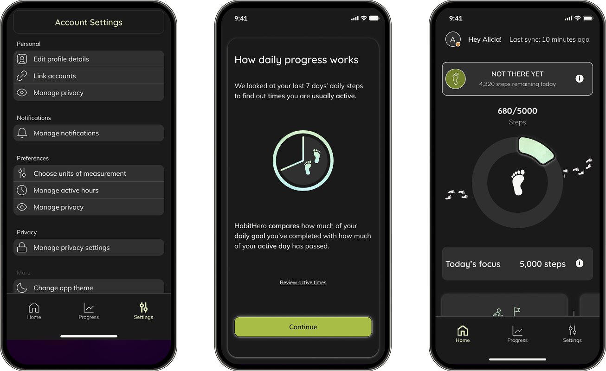
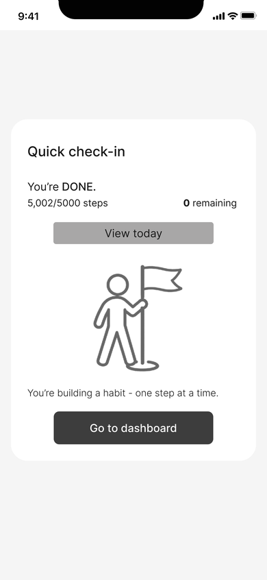
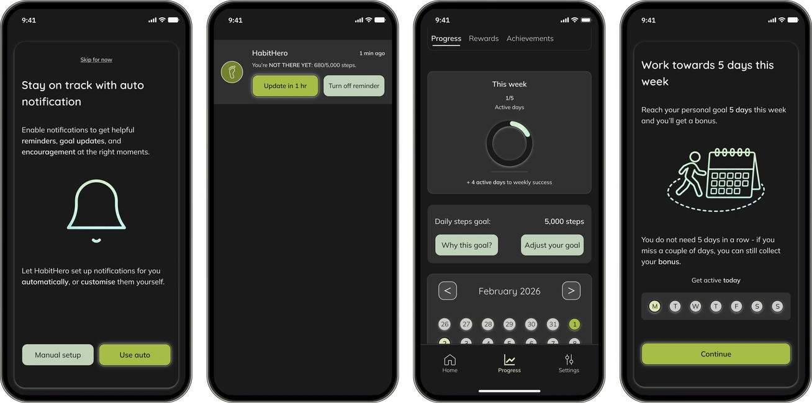
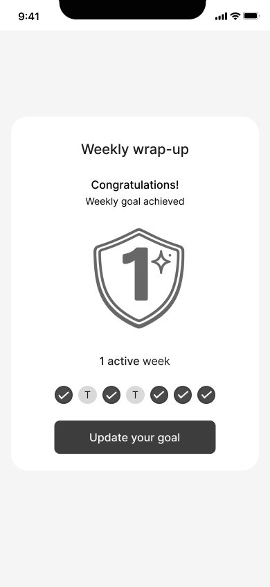

HabitHero: redesigning fitness progress tracking for real-life routines

HabitHero is a rewards-based fitness app built around personalised activity goals.
I planned and conducted two distinct research rounds, synthesised the findings, redesigned the information architecture and progress experience, produced the prototype and ran usability testing.
The redesign focused on the progress loop, from onboarding and goal setting to daily guidance, recovery, weekly review and recalibration.
The challenge
The existing experience made users interpret several metrics before they could decide whether they were on track. Discovery showed that goal setting created decision pressure, completion was ambiguous and motivation could become fragile when routines changed.
That created a product problem for PrimeCare: make progress easier to understand without turning an insurance-linked fitness product into another source of pressure.

Issue #1: Goal choice without guidance or context
Users select an outcome before seeing how it becomes a realistic personal target.
Issue #2: Progress complexity
Users must compare several metrics to decide whether they are on track.
Issue #3: Activity data lacks purpose
Progress is recorded but doesn’t clarify completion or the next action.
The opportunity was to make the early experience clearer and more supportive, while retaining enough explanation and control for users to trust it.
Case-study stages
- 01DiscoverInterviews and evidence
- 02DefinePriorities and scope
- 03DevelopDecisions and iteration
- 04OutcomeValidation and next work
Five interviews exposed three points of friction
Round 1 was discovery: five user interviews about fitness apps, everyday routines and what made progress feel manageable. The evidence established three priorities before any usability testing began.
-
Discovery interviews · Decision cost 5/5
Finding
Goal setting creates decision pressure
“It needs to be realistic because... we’re human beings, we’re not machines.”
Eleni, 34Design priorityRecommend a realistic starting goal, explain it and keep adjustment available.
-
Discovery interviews · Progression model 5/5
Finding
Progress needs a clear sense of “done”
“You need to know immediately: I have done it now - and then you can relax.”
Gareth, 43Design priorityShow a clear daily status, a completion moment and one useful next action.
-
Discovery interviews · Fragile motivation 4/5
Finding
Disruption can turn a goal into pressure
“It’s another thing to get stressed about.”
Ashley, 36Design priorityMake recovery and recalibration normal parts of the experience.
Define a clearer progress loop
I translated the three priorities into one connected experience: goal setup, daily guidance, completion, recovery, weekly review and recalibration.
The loop concentrated the redesign on lower decision effort, clearer progress and compassionate motivation.

Choosing the boundary
The redesign was scoped to the progress loop because it served all three discovery priorities. That meant leaving out work which was relevant to the wider product but did not directly improve this loop.
This was an awkward but deliberate boundary: HabitHero is a rewards-based app, yet a rewards-system redesign sat outside the project.
Scope decision
- In scopeThe progress loopOnboarding, daily status, recovery and weekly review
- Not builtBroader activity trackingTested as a discovery hypothesis and rejected
- DeprioritisedCross-app aggregationLowest interview coverage at 2/5 and worst impact-to-effort result
Make the trade-offs visible
Four decisions shaped the progress loop. Each began with a user or product tension, considered a credible alternative and made the reason for the final direction explicit.
Decision 01
Build confidence before commitment
Goal setting needed to balance guidance with user control. I explored three different ways of helping users establish a realistic target.


Decision 02
Make progress immediately understandable
- Insight
- Decision cost and prioritisation appeared in 5/5 discovery interviews. Home needed to answer: am I on track, and what next?
- Options considered
- A soft circular dashboard and a stacked, status-first hierarchy.
- Action
- Put status and today’s progress first; keep weekly progress and rewards secondary.
- Why this won
- The circular option felt less like a performance dashboard, but could not hold explanatory text well on mobile.

Selected direction
The Home screen leads with current status, progress and contextual guidance. Plain-language tooltips, informed by Nguyen, provide explanation without making every user read it.


Decision 03
Design for recovery, not perfection
Fragile motivation appeared in 4/5 discovery interviews. Recovery needed to recognise partial progress and offer a manageable route back.
Options considered
A progress-ring overlay versus a lean status snapshot; automatic reminders versus manual control.
Action
Use four plain-language states, one next action and an off-track “Update in 1 hr” route.
Why this won
Removing the duplicate ring lowered cognitive load. Manual controls protected autonomy while automatic prompts kept recovery easy.

Status responds to context
Steps completed are compared with active hours remaining.
Prompts arrive before the day closes
Notifications surface one useful next action.
Recovery stays flexible
Act now, delay, return later or change the goal.
{kind=link}

{kind=link}

Decision 04
Put guardrails around recalibration
- Insight
- Users needed control, but unconstrained editing could produce unrealistic goals and repeated failure.
- Options considered
- Unbounded manual adjustment or bounded adjustment with guardrails.
- Action
- Allow changes in 500-step increments, with a warning at 2,000 steps.
- Why this won
- It balanced agency with Nielsen’s error-prevention principle and reduced dropout risk.

Review precedes recalibration
A proposed goal follows the previous seven days.
Adjustment stays bounded
Users accept the recommendation or adjust within guardrails.
Closure stays specific
The outcome is explained before the next week.
Make the weekly rule explicit
Ramsay’s guidance on specificity shaped the wrap-up. The interface explains the five-day target before asking users to continue or update their goal.
{kind=link}

Testing validated the direction and exposed its limits
Round 2 was validation: seven moderated usability sessions in the UK market during February 2026, averaging 45 minutes. Five participants joined remotely on mobile, with an average age of 36; two joined in person in London on desktop, with an average age of 44.
Participants were recruited through an email screener. The target sample was aged 35–50, included Android and iOS users, and prioritised people with caregiving or long-commute constraints.
-
System Usability Scale · n=7
Mean SUS was approximately 74
This was above the conventional benchmark of 68, with one outlier score of 42.
-
Return intent · n=7
57.1% Yes, 28.6% Maybe, 14.3% No
This was the study’s closest behavioural proxy for retention.
-
Clean task success · n=7
Completion concealed two weak points
Overall task completion was 83–88%, but clean success was approximately 14% for Home interpretation and the weekly outcome rule.
-
Rewards comprehension · n=7
Only 2/7 participants understood the weekly rule
At 28.6%, this was the weakest comprehension result. The value-loop task was also hardest, with a mean ease score of 4.1.
Two trust problems could not be treated as copy details
-
Terminology risk · 5/7 participants
“Streak” implied consecutive days
HabitHero used it for a non-consecutive five-of-seven pattern. Interviewee 4, who was motivated by streak mechanics, warned that this could damage trust with the users most likely to value it.
Next decisionUse consistent “goal days” language and define the rolling-week rule.
-
Adoption risk · Participants 3, 5, 6 and 7
Permission wording sounded like a locked gate
Users were told tracking could be turned off, while also being told HabitHero would not work without it. Interviewee 5, an Android user and privacy-sceptic, questioned why an insurance-linked company wanted step data and gave the lowest confidence rating, 4/10.
Next decisionResolve the consent contradiction and make the scope of data access verifiable.

Delivered
A connected progress loop
The prototype reduced interpretation, explained system decisions and offered more than one route back after disruption.
Next validation
Trust, control and longer-term behaviour
The next phase must test specialist approval, notification behaviour and whether users return after a lapse.